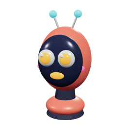
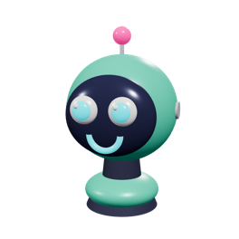

Человек создаёт свой мир и решает в нём свои задачи
Мы берём на себя часть этих задач и даём набор инструментов, через которые раскрывается творческий потенциал человека. Освободившееся время собственника и менеджера уходит не на рутину, а на новые открытия.
Для себя
Личные проекты, идеи и эксперименты, на которые раньше не хватало времени.
Для бизнеса
Процессы, которые работают без ручного участия и масштабируются вместе с выручкой.
Для общества
Решения, выходящие за рамки одной компании и работающие на среду вокруг.
Диагностика
Где обычно утекает время
Мы начинали с этих пяти симптомов у восьми клиентов из десяти. Если узнаёте хотя бы два — автоматизация окупится быстрее, чем кажется.
01
Данные живут в трёх местах
Таблица у бухгалтера, чат у продажников, блокнот у склада. Сверка занимает день, а цифры всё равно расходятся.
02
Заявки теряются
Часть приходит в почту, часть в мессенджер, часть в директ. Никто не считает, сколько из них осталось без ответа.
03
Документы собираются вручную
Договор, счёт, акт, УПД делаются копипастом. Одна опечатка в реквизитах — и оплата уходит на неделю вправо.
04
Отчёт готовится три дня
К понедельнику руководитель видит картину прошлой недели. Решения принимаются по устаревшим данным.
05
Всё держится на одном человеке
Процесс знает только Марина. Марина в отпуске — отдел работает вполсилы.
Начинаем с замера. Считаем, сколько часов в месяц уходит на каждую операцию и во что это обходится в деньгах. Автоматизируем только то, что окупается.
Это не люди и не аватары людей — это ИИ-агенты. Имена нужны, чтобы в команде было понятно, кто за что отвечает: «отдай Анастасии» короче и яснее, чем «запусти сценарий обработки входящих счетов».

Робот-менеджер
Владимир
Принимает обращения из почты, сайта, телефонии и мессенджеров. Разбирается, что нужно клиенту, заводит сделку и не даёт ей зависнуть.
Отвечает за 40 секунд в любое время суток
Уточняет недостающее: объём, сроки, реквизиты
Заводит сделку и ставит задачу менеджеру
Поднимает тревогу, если заявка встала
Битрикс24 · amoCRM · Telegram · WhatsApp

Робот-бухгалтер
Анастасия
Разбирает входящие счета и акты, сверяет суммы со спецификацией, собирает документы по шаблону и замечает то, что человек пропускает на десятом счёте подряд.
Распознаёт счёт и заносит позиции
Сверяет сумму и показывает расхождение
Готовит договор, счёт, акт и УПД
Отмечает дубли и просроченную оплату
1С · Диадок · банковские выписки
Робот-аналитик
Егор
К утру собирает картину бизнеса: выручка, маржа, конверсия, загрузка. Находит отклонения и отвечает на вопросы по данным человеческим языком.
Отчёт в мессенджер к 9:00
Ищет аномалии, а не просто считает суммы
Отвечает на вопрос «почему упало»
Считает окупаемость рекламы по каналам
CRM · 1С · Яндекс Метрика · дашборды
Состав подбирается под процессы — сотрудник появляется там, где рутина считается в часах
Демонстрация
Как это выглядит в работе
Кадры сняты с работающих приложений — это интерфейс, а не рисованная анимация. Данные вымышленные: ООО «Демо-Металл», металлопрокат.
Общий список обращений из всех каналов · карточка лида с брифом, скорингом и перепиской · диалог уточнения, когда данных не хватило · расходы на модель.
Очередь входящих счетов · пойманное расхождение суммы · собранный черновик коммерческого предложения · готовый документ.
Обзор показателей с динамикой · найденные аномалии · вопрос по данным и ответ · недельный отчёт человеческим языком.
Каждый ролик — 10 секунд, без звука, по кругу
Ценности
Что это даёт бизнесу
↯
Скорость
Главное преимущество. Гипотеза проверяется неделями, а не кварталами: быстрый запуск, быстрый тест, первые метрики.
↓
Бюджет
Сокращение стоимости разработки. Решение собирается из готовых модулей вместо долгой сборки с нуля.
≡
Доступность аналитики
Работа с данными перестаёт быть привилегией больших компаний: базы, отчётность и анализ — на любом масштабе.
✦
Творческий потенциал
Инструменты закрывают рутину. Человеку остаётся то, что может сделать только человек.
Позиция
Нейросеть — инструмент. Результат делает архитектура.
Скорость берётся не из ИИ, а из понимания, что именно и в каком порядке собирать. ИИ лишь ускоряет сборку — работу ведут специалисты. Поэтому внедрение идёт по шагам, и после каждого вы можете остановиться: сделанное продолжает работать.
Анализ
Два дня интервью с командой. Рисуем, как процесс идёт сейчас, замеряем время на каждой операции и считаем стоимость рутины в месяц.
3–5 дней · карта процессов и расчёт экономии
Архитектура
Проектируем решение целиком — до того, как написана первая строка. Задачи раскладываем по матрице «эффект / трудоёмкость».
2–3 дня · дорожная карта и смета
Сборка
Каждые две недели — работающий кусок: настроенный этап воронки, живая интеграция, готовый агент. Показываем на демо, собираем правки.
от 2 недель · работающие сценарии
Запуск
Инструкции на языке сотрудников, короткие видео, дежурство в первые дни. Следим, чтобы люди пользовались, а не обходили систему.
1 неделя · команда работает в системе
Развитие
Мониторим ошибки, дорабатываем по обратной связи, раз в квартал возвращаемся к карте процессов и ищем следующий участок.
ежемесячно · система не деградирует
0лет разработки и продвижения веб-проектов
0до первого работающего сценария
0средняя экономия ручного времени
0внедрений с 2016 года
Сценарии
С чем к нам приходят
↗
Запустить
Протестировать гипотезу или поднять процесс с нуля и снять первую аналитику и метрики.
⤢
Усилить
Улучшить текущую систему: анализируем архитектуру, находим узлы и точки масштабирования.
◎
Автоматизировать
Внедрить ИИ-агентов, которые берут на себя аналитику, отчётность, операционные процессы и рекламу.
Оптовая торговля · 40 сотрудников
Заказы из почты — в CRM без менеджера
Клиенты присылали заявки письмами в свободной форме. Агент разбирает письмо, находит позиции в номенклатуре 1С, проверяет остатки и создаёт сделку со спецификацией.
4 ч → 12 минобработка заявки
−2ставки операторов
Сеть клиник · 6 филиалов
Запись, напоминания и возврат пациентов
Связали сайт, телефонию и МИС. Бот подтверждает визит, напоминает за сутки, предлагает перенос и сам возвращает тех, кто не дошёл до повторного приёма.
−38%неявок
+19%повторных визитов
Производство мебели · 120 человек
Сквозной путь от заказа до отгрузки
Заказ автоматически превращается в спецификацию, задание в цех и план закупки. Руководитель видит срыв сроков в день его появления, а не в конце месяца.
−31%срывов сроков
3 дн. → 1 чсбор отчёта
«Ожидали полгода мучений и саботажа от отдела. По факту через месяц менеджеры сами просили добавить ещё сценариев — им стало удобнее.»
Андрей Литвиновкоммерческий директор, оптовая компания
«Главное — считали не абстрактную эффективность, а конкретные часы. Смету защитили перед собственником за пятнадцать минут.»
Марина Ковальчукоперационный директор, сеть клиник
Форматы
Как можно начать
Стоимость фиксируем после аудита. Ниже — вилки, в которые укладывается большинство проектов.
Аудит процессов
от 60 000 ₽
Разовая работа, 1 неделя
Интервью с командой и замер операций
Карта процессов «как есть»
Расчёт стоимости рутины
Дорожная карта с приоритетами
Смета на внедрение
Стоимость аудита вычитаем из сметы, если идём дальше.
Выбирают чаще всего
Внедрение под ключ
от 120 000 ₽
Спринтами по 2 недели
Всё из аудита
CRM, воронки и права доступа
Интеграции с 1С, сайтом, телефонией
Документооборот и шаблоны
ИИ-агенты под ваши процессы
Дашборды для руководителя
Обучение команды и месяц поддержки
Оплата по этапам, каждый этап — работающий результат.
Поддержка и развитие
от 45 000 ₽ / мес
Абонентское обслуживание
Выделенный инженер
Мониторинг интеграций 24/7
Реакция на инцидент до 2 часов
Банк часов на доработки
Квартальный пересмотр процессов
Берём на поддержку и системы, внедрённые не нами.
Вопросы
Что спрашивают до старта
Первый работающий сценарий — через 2–3 недели после старта. Полный контур для компании до 100 человек обычно занимает 2–4 месяца, но польза приходит не в конце, а после каждого спринта.
Почти никогда. В девяти случаях из десяти текущие системы закрывают задачи, а проблема — в разрывах между ними и в ненастроенных процессах. Менять что-то предлагаем, только если доработка старого дороже перехода.
Сопротивление возникает, когда систему внедряют «сверху» и она добавляет работы. Мы делаем наоборот: снимаем с людей рутину и на интервью спрашиваем, что бесит их самих. Первые две недели дежурим и правим то, что мешает.
Все решения строятся на ваших аккаунтах и вашей инфраструктуре, исходный код и доступы передаются вам. К каждому проекту идёт техническая документация — другой подрядчик продолжит без археологии.
Автоматизация окупается от пяти-семи человек в операционке. Для маленьких команд делаем короткие проекты на 3–4 недели: заявки, документы и отчёт — этого обычно хватает на год роста.
Нет. Агент готовит, проверяет и предлагает — решение остаётся за человеком там, где цена ошибки высока. Границы ответственности мы описываем на этапе архитектуры, до сборки.
Да, по договору с техническим заданием и актами по этапам. NDA подписываем до начала аудита.
Дальше
Расскажите задачу — вернёмся с разбором
Посмотрим архитектуру, назовём узкие места и предложим состав решения со сроком. Сорок минут, без презентаций и продаж.